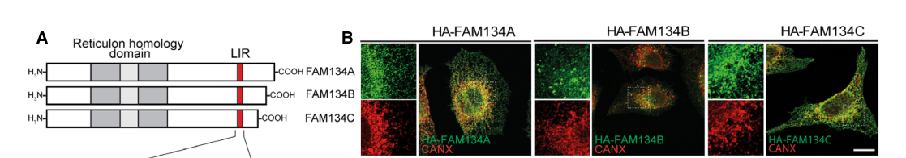

RETREG2 (reticulophagy regulator 2; also called FAM134A) is an endoplasmic-reticulum (ER) membrane protein of the FAM134/RETREG family (RETREG1/FAM134B, RETREG2/FAM134A, RETREG3/FAM134C) that functions as a selective-autophagy receptor for the ER (ER-phagy/reticulophagy). It is a multi-pass ER membrane protein whose transmembrane segments form a reticulon-homology domain (RHD) that bends and shapes ER membranes, and it carries a cytosolic LC3-interacting region (LIR) motif that binds ATG8-family proteins (LC3/GABARAP). RETREG2 is held in an inactive state under basal conditions and is activated by cellular stress; once activated it promotes ER fragmentation and delivers ER fragments into lysosomes by sequestering them into autophagosomes through its LIR-mediated interaction with ATG8 proteins, thereby driving selective turnover of the ER. Beyond bulk ER-phagy, the FAM134 paralogues contribute to ER membrane remodeling and to collagen quality control (the latter reported to be LIR-independent). RETREG2 localizes to the ER membrane.
| GO Term | Evidence | Action | Reason |
|---|---|---|---|
|
GO:0016020
membrane
|
IBA
GO_REF:0000033 |
KEEP AS NON CORE |
Summary: Phylogenetic inference of membrane localization; correct but a generic parent of the specific ER membrane localization.
Reason: Correct but overly generic; the specific endoplasmic reticulum membrane annotation captures RETREG2's actual localization.
Supporting Evidence:
file:human/RETREG2/RETREG2-uniprot.txt
SUBCELLULAR LOCATION: Endoplasmic reticulum membrane
|
|
GO:0005789
endoplasmic reticulum membrane
|
IEA
GO_REF:0000044 |
ACCEPT |
Summary: Electronic transfer of ER membrane localization from UniProt; the correct core compartment, redundant with experimental EXP evidence.
Reason: Core localization; RETREG2 is a multi-pass ER membrane protein that acts as an ER-phagy receptor.
Supporting Evidence:
file:human/RETREG2/RETREG2-uniprot.txt
SUBCELLULAR LOCATION: Endoplasmic reticulum membrane {ECO:0000269|PubMed:34338405}
|
|
GO:0061753
substrate localization to autophagosome
|
IEA
GO_REF:0000108 |
ACCEPT |
Summary: Inter-ontology logical inference of substrate localization to autophagosome; consistent with RETREG2 delivering ER fragments into autophagosomes.
Reason: Core process; RETREG2 sequesters ER substrate into autophagosomes via its LIR-ATG8 interaction during ER-phagy.
Supporting Evidence:
file:human/RETREG2/RETREG2-uniprot.txt
mediates ER delivery into lysosomes through sequestration into autophagosomes via interaction with ATG8 family proteins
|
|
GO:0005515
protein binding
|
IPI
PMID:21900206 A directed protein interaction network for investigating int... |
KEEP AS NON CORE |
Summary: High-throughput directed protein-interaction-network interaction. Bare protein binding is uninformative.
Reason: High-throughput interactome; bare protein binding is uninformative per curation guidelines.
|
|
GO:0005515
protein binding
|
IPI
PMID:26040720 Regulation of endoplasmic reticulum turnover by selective au... |
KEEP AS NON CORE |
Summary: Interaction(s) from the foundational ER-phagy/FAM134 selective-autophagy study (e.g. ATG8/LC3 family). Bare protein binding is uninformative.
Reason: Records functionally relevant ER-phagy interactions but the bare term is uninformative; the ER-autophagosome adaptor activity annotation captures the function.
Supporting Evidence:
PMID:26040720
Regulation of endoplasmic reticulum turnover by selective autophagy
|
|
GO:0005783
endoplasmic reticulum
|
IEA
GO_REF:0000120 |
KEEP AS NON CORE |
Summary: Electronic assignment of endoplasmic reticulum localization; correct but a generic parent of the specific ER membrane localization.
Reason: Correct but overly generic; the specific ER membrane annotation captures RETREG2's localization as a multi-pass ER membrane protein.
Supporting Evidence:
file:human/RETREG2/RETREG2-uniprot.txt
SUBCELLULAR LOCATION: Endoplasmic reticulum membrane
|
|
GO:0140506
endoplasmic reticulum-autophagosome adaptor activity
|
IEA
GO_REF:0000107 |
ACCEPT |
Summary: Ortholog-transferred (Ensembl Compara) ER-autophagosome adaptor activity; the precise molecular function of RETREG2 as an ER-phagy receptor that bridges the ER membrane to ATG8/autophagosomes via its LIR motif.
Reason: Core molecular function; RETREG2 is an ER-phagy receptor whose LIR motif tethers the ER to autophagosomes (ATG8 family), exactly captured by this term.
Supporting Evidence:
file:human/RETREG2/RETREG2-uniprot.txt
DOMAIN: The LIR motif interacts with ATG8 family proteins
|
|
GO:0005789
endoplasmic reticulum membrane
|
EXP
PMID:34338405 Role of FAM134 paralogues in endoplasmic reticulum remodelin... |
ACCEPT |
Summary: Experimental evidence (FAM134 paralogue study) for ER membrane localization of RETREG2/FAM134A. Core compartment.
Reason: Direct experimental support for the core ER membrane localization where RETREG2 functions in ER-phagy.
Supporting Evidence:
PMID:34338405
Role of FAM134 paralogues in endoplasmic reticulum remodeling, ER-phagy, and Collagen quality control
|
|
GO:0061709
reticulophagy
|
IMP
PMID:34338405 Role of FAM134 paralogues in endoplasmic reticulum remodelin... |
NEW |
Summary: RETREG2/FAM134A is an ER-phagy receptor that induces ER fragmentation and lysosomal degradation of ER material after autophagy induction or ER stress.
Reason: PN correctly identified reticulophagy as the specific BP missing from the review/GOA. The existing GOA captures the ER-autophagosome adaptor MF and generic substrate localization to autophagosome, but not the specific ER-phagy process.
Supporting Evidence:
PMID:34338405
We identify FAM134A/RETREG2 and FAM134C/RETREG3 as ER-phagy receptors
|
Q: What stress signals and post-translational modifications switch RETREG2/FAM134A from its inactive basal state to the active ER-phagy-competent state, and how does this differ from its paralogues RETREG1/FAM134B and RETREG3/FAM134C?
Q: How does RETREG2 mediate LIR-independent collagen quality control, and is this mechanistically separable from its canonical LIR-dependent ER-phagy?
Experiment: Compare ER-phagy flux and ER membrane fragmentation in cells expressing wild-type versus LIR-mutant RETREG2 under basal and stress (e.g. ER-stress/starvation) conditions, using ER-phagy reporters, to define LIR-dependent versus -independent activities.
Experiment: Perform reconstitution and structure-function analysis of the RETREG2 reticulon-homology domain to test its membrane-curvature/scission activity and its requirement for ER fragmentation during ER-phagy.
The research report should be a detailed narrative explaining the function, biological processes, and localization of the gene product. Citations should be given for all claims.
You should prioritize authoritative reviews and primary scientific literature when conducting research. You can supplement
this with annotations you find in gene/protein databases, but these can be outdated or inaccurate.
We are specifically interested in the primary function of the gene - for enzymes, what reaction is catalyzed, and what is the substrate specificity? For transporters, what is the substrate? For structural proteins or adapters, what is the broader structural role? For signaling molecules, what is the role in the pathway.
We are interested in where in or outside the cell the gene product carries out its function.
We are also interested in the signaling or biochemical pathways in which the gene functions. We are less interested in broad pleiotropic effects, except where these elucidate the precise role.
Include evidence where possible. We are interested in both experimental evidence as well as inference from structure, evolution, or bioinformatic analysis. Precise studies should be prioritized over high-throughput, where available.
RETREG2 is the human gene encoding Reticulophagy regulator 2, also known in the literature as FAM134A (and described as part of the FAM134/RETREG family). In a primary cell-biology paper that explicitly lists UniProt accessions for the family, FAM134A is annotated as “RETREG2; Q8NC44 (UniProtKB)”, confirming the requested identity match (kumar2021rtn4binteractingprotein pages 2-3). The protein is discussed together with its paralogues FAM134B/RETREG1 and FAM134C/RETREG3, which share reticulon-homology-like membrane-shaping features and LC3/ATG8 binding motifs characteristic of ER-phagy receptors (kumar2021rtn4binteractingprotein pages 2-3, reggio2021roleoffam134 pages 5-7).
ER-phagy (reticulophagy) is a form of selective autophagy in which portions of the endoplasmic reticulum are segregated from the bulk ER and delivered to lysosomes/vacuoles for degradation. A central concept is that ER-phagy is mediated by ER-phagy receptors—ER-resident membrane proteins (or ER-associated factors) that contain cytosolic LC3/Atg8-binding motifs (LIRs/AIMs) that tether ER membranes to forming autophagosomes (reggiori2022erphagymechanismsregulation pages 1-3). ER-phagy contributes to ER size control, recovery from ER stress, and clearance of ER subdomains enriched in aberrant or toxic material (reggiori2022erphagymechanismsregulation pages 1-3).
Reggiori & Molinari (Physiological Reviews, 2022; published July 2022) emphasize that many ER-phagy receptors are ER membrane proteins whose reticulon-homology domains (RHDs) can deform membranes before the scission/fragmentation steps that generate ER fragments destined for lysosomal clearance (reggiori2022erphagymechanismsregulation pages 19-20). They specifically discuss mammalian ER-phagy receptors including the FAM134 protein family, which can associate with luminal chaperones such as calnexin (CNX) that help segregate misfolded luminal clients into removable ER subdomains (reggiori2022erphagymechanismsregulation pages 19-20).
In primary experimental work comparing the FAM134 paralogues, FAM134A/RETREG2 shows broad ER distribution and co-localizes with ER markers such as CALNEXIN and REEP5 in mammalian cells (reggio2021roleoffam134 pages 1-2). This is consistent with its assignment as an ER-resident membrane protein acting at the ER surface to mediate ER remodeling and turnover (reggio2021roleoffam134 pages 1-2, reggio2021roleoffam134 pages 5-7).
Reggio et al. (EMBO Reports, Aug 2021; https://doi.org/10.15252/embr.202052289) provide direct biochemical and cell-biological evidence that FAM134A is an ER-phagy receptor:
- ATG8 binding: FAM134A binds mammalian ATG8 proteins via a canonical LIR; mutation of the LIR abolishes ATG8 binding in pull-down assays (reggio2021roleoffam134 pages 4-5).
- Stress-inducible ER fragmentation and autophagic delivery: Under nutrient starvation, wild-type FAM134A promotes formation of LC3B-positive ER fragments and is delivered to lysosomal/LAMP1-positive compartments; ΔLIR mutants fail in these readouts, supporting a LIR-dependent receptor function in ER-phagy (reggio2021roleoffam134 pages 4-5).
- ER-phagy flux assays: ER-phagy flux monitored using ER-lumen reporters (e.g., ssRFP-GFP-KDEL) is induced by FAM134A overexpression, though the activity is described as lower/basal-inactive relative to FAM134B, consistent with a stress-activated receptor (reggio2021roleoffam134 pages 5-7, reggio2021roleoffam134 pages 4-5).
These experimentally supported properties match the UniProt-provided conceptual description (reticulophagy regulator; RHD/ER-autophagy membrane regulator domain context) in the user prompt.
A key aspect of RETREG2 biology that emerges from Reggio et al. is that the three FAM134 paralogues jointly control ER morphology and protein quality control:
- ER morphology: Single knockout cells show ER morphology changes (e.g., ER swelling/dilation and expansion of ER marker-positive regions), and reconstitution experiments show that restoring FAM134 proteins can rescue ER structural defects in a manner that depends on intact receptor features (including LIR dependence in key assays) (reggio2021roleoffam134 pages 7-9, reggio2021roleoffam134 pages 5-7).
- Collagen/procollagen quality control: Global proteomics in Fam134 KO backgrounds reveals accumulation of collagens/collagen-processing factors and accumulation of misfolded pro-Collagen I in KO cells; in wild-type cells, pro-Collagen I can be found in LAMP1-positive lysosomes, consistent with lysosomal clearance pathways (reggio2021roleoffam134 pages 7-9, reggio2021roleoffam134 pages 9-12).
Reggio et al. report a notable paralogue-specific behavior: in Fam134a knockout MEFs, reconstitution with a Fam134a ΔLIR mutant was as effective as wild-type Fam134a in reducing pro-Collagen I accumulation (reggio2021roleoffam134 pages 9-12). They also report weak/undetectable interaction between endogenous LC3B and FAM134A in some assays, with only slight interaction with GABARAPs, despite the presence of a functional LIR in biochemical binding assays (reggio2021roleoffam134 pages 9-12).
Interpretation: RETREG2/FAM134A appears capable of supporting at least one arm of ER quality control for a shared substrate (procollagen) through a pathway that is less dependent on canonical LIR–LC3B engagement than the pathways used by FAM134B/C, while still using its LIR for canonical receptor behavior (localization to lysosomes, starvation-induced ER fragmentation) in other contexts (reggio2021roleoffam134 pages 9-12, reggio2021roleoffam134 pages 4-5).
Berkane et al. (Nature Communications, Oct 2023; https://doi.org/10.1038/s41467-023-44101-5) provide a mechanistic model for FAM134-family receptor activation—centered on phosphorylation → ubiquitination → nanoscale clustering—primarily for FAM134B and FAM134C:
- CK2 as an upstream activator: A kinase-inhibitor screen identifies CK2 as essential for Torin1 (mTOR inhibitor)-induced ER-phagy mediated by FAM134B/C (berkane2023thefunctionof pages 1-2).
- Phosphorylation enables ubiquitination: Phosphosite mutations abolish ubiquitination of FAM134B/C and impair function, including increased collagen accumulation (berkane2023thefunctionof pages 6-7).
- Quantitative nanoscale organization: DNA-PAINT SMLM quantifies FAM134B cluster-size modes shifting from 66 nm (basal) to emergence of a 104 nm population under Torin1; CK2 inhibition blocks this shift (cluster mode ~69 nm), and phospho-mutants fail to enlarge clusters (berkane2023thefunctionof pages 7-8).
- Quantitative effects on flux: Ubiquitination blockade using an E1 inhibitor strongly suppresses Torin1-induced ER-phagy flux (reported as >80% in the excerpt), and CK2 inhibition suppresses Torin1-induced ER-phagy by ~60–70% (berkane2023thefunctionof pages 4-5).
Relevance to RETREG2: while this paper focuses mechanistically on FAM134B/C, it frames FAM134A/RETREG2 as predominantly inactive at baseline, similar to FAM134C, which implies that comparable activation logic may apply but is not directly demonstrated for RETREG2 in the provided excerpts (berkane2023thefunctionof pages 1-2).
Foronda et al. (Nature, May 2023; https://doi.org/10.1038/s41586-023-06090-9) identify an ER-phagy mechanism where ER-shaping proteins assemble into clusters required for ER membrane remodeling:
- ARL6IP1 binds FAM134 homologues: Tagged FAM134A and FAM134C co-immunoprecipitate with ARL6IP1, and BiCAP assays demonstrate ER-distributed homo- and hetero-dimers involving ARL6IP1 and FAM134-family members (foronda2023heteromericclustersof pages 2-3).
- Disease-relevant quantitative phenotypes: Arl6ip1 knockout mice show neurodegenerative phenotypes and ER morphology changes, with statistics including brain weight 0.46 g (WT) vs 0.39 g (KO), P=0.016, reduced CMAPs (ANOVA F=18.6, P=0.0015), and increased ER sheet area (P=0.0006) (foronda2023heteromericclustersof pages 2-3).
Relevance to RETREG2: this provides direct evidence that RETREG2/FAM134A participates in the physical interaction network of ER-phagy/ER-shaping clusters implicated in neuronal maintenance, even though disease phenotypes in this paper are driven by ARL6IP1 loss rather than RETREG2 variants (foronda2023heteromericclustersof pages 2-3).
Iavarone et al. (EMBO Reports, July 2024; https://doi.org/10.1038/s44319-024-00213-7) test paralogue function in vivo using mouse genetics:
- Combined Fam134b/c deletion drives severe peripheral neurodegeneration, while combinations including Fam134a deletion did not produce the same phenotype in this study’s framing, suggesting paralogue/tissue specialization (iavarone2024fam134candfam134b pages 1-2).
- Quantitative electrophysiology shows, for example, Fam134c knockout spinal nociceptive neurons with increased firing rate (4.107 ± 0.599 spikes/s vs 0.40 ± 0.053 WT, P=0.0455) and burst frequency (34.586 ± 5.385 Hz vs 4.572 ± 0.313 WT, P<0.0001) (iavarone2024fam134candfam134b pages 1-2).
- In sciatic nerve, Fam134a expression is low/absent in wild-type tissue and becomes upregulated in some KO backgrounds, but does not substitute effectively for the combined Fam134b/c requirement in axons (iavarone2024fam134candfam134b pages 5-7).
Implication: RETREG2/FAM134A is a bona fide ER-phagy receptor, but its physiological “dominant” role appears tissue-context dependent, with axonal tubular ER maintenance relying primarily on Fam134b/c in peripheral nerves (iavarone2024fam134candfam134b pages 5-7, iavarone2024fam134candfam134b pages 1-2).
Robinson et al. (Scientific Reports, Jan 2021; https://doi.org/10.1038/s41598-021-82169-5) identify RETREG2/FAM134A as one of three novel glioma susceptibility genes via transcriptome-wide Mendelian randomization plus colocalization integrating GWAS and eQTL data (robinson2021transcriptomewidemendelianrandomization pages 1-2). Reported datasets include:
- brain eQTL effective n ≈ 1,194;
- whole blood eQTL n = 31,684;
- glioma GWAS: 7,400 cases / 8,257 controls (with GBM 3,112 cases and non-GBM 2,411 cases) (robinson2021transcriptomewidemendelianrandomization pages 1-2).
This is a translationally relevant association suggesting altered RETREG2 expression may influence glioma risk, but effect sizes for RETREG2 are not provided in the excerpt and would be needed for clinical-risk modeling (robinson2021transcriptomewidemendelianrandomization pages 1-2).
Hashimoto et al. (PNAS, Feb 2018; https://doi.org/10.1073/pnas.1717363115) report that tumor-secreted exosomal hsa-miR-940 targets FAM134A and promotes osteogenic differentiation of human mesenchymal stem cells; implantation of miR-940–overexpressing cancer cells induced extensive osteoblastic lesions in vivo (hashimoto2018cancersecretedhsamir940induces pages 1-2). This provides a plausible mechanistic link between cancer-derived extracellular vesicles and regulation of host bone remodeling via downregulation of FAM134A, though the excerpted pages do not provide quantitative effect sizes.
A high-authority synthesis (Physiological Reviews 2022) frames FAM134-family receptors as ER-phagy receptors that (i) recruit autophagy machinery via LIRs and (ii) use RHD-mediated membrane deformation to help fragment ER subdomains for lysosomal clearance; it highlights receptor interactions with ER chaperones (calnexin) as a route for coupling luminal proteostasis stress to selective ER removal (reggiori2022erphagymechanismsregulation pages 19-20).
Within this framework, the primary experimental evidence for RETREG2/FAM134A supports a model in which:
1) RETREG2 is an ER membrane resident that can be delivered to lysosomes during induced ER-phagy;
2) RETREG2 can bind ATG8-family proteins via LIR and promote ER fragmentation under stress;
3) RETREG2 contributes to ER proteostasis, including collagen quality control, with a notable LIR-independent route for procollagen I handling in some contexts (reggio2021roleoffam134 pages 4-5, reggio2021roleoffam134 pages 9-12).
The following table compiles the strongest direct and indirect evidence for RETREG2/FAM134A function, emphasizing what is experimentally proven for RETREG2 versus inferred from the broader FAM134 receptor family.
| Finding/Concept | Evidence type (primary/review/genetics) | Experimental system/assay | Key quantitative/statistical detail | Implication for function | Source with DOI/year/URL |
|---|---|---|---|---|---|
| Identity and core function of RETREG2/FAM134A (Q8NC44): FAM134A is an ER-resident FAM134/RETREG-family protein and a functional ER-phagy receptor | Primary | U2OS overexpression, HA-tag localization with CALNEXIN/REEP5, GST–mATG8 pull-downs, LC3B colocalization, immunogold EM, ssRFP-GFP-KDEL ER-phagy reporter, Fam134 KO/reconstitution in MEFs | FAM134A binds all six mammalian ATG8s via its LIR; starvation increases LC3B+/HA+ ER fragments; wild-type but not ΔLIR is efficiently delivered to lysosomal/LAMP1+ structures; ER-phagy flux induction is milder than FAM134B, consistent with lower basal activity (reggio2021roleoffam134 pages 4-5, reggio2021roleoffam134 media 27d840f0) | Confirms RETREG2/FAM134A as a stress-activated ER-phagy receptor linking ER membrane remodeling to lysosomal degradation | Reggio et al., EMBO Reports (Aug 2021), doi:10.15252/embr.202052289, https://doi.org/10.15252/embr.202052289 (reggio2021roleoffam134 pages 1-2, reggio2021roleoffam134 pages 4-5, reggio2021roleoffam134 media 27d840f0) |
| RETREG2 helps maintain ER morphology and ER proteostasis | Primary | Single Fam134a/b/c KO MEFs, global proteomics, immunolabeling for ER markers and Collagen I, rescue with WT or ΔLIR constructs | KO cells accumulate ER proteins and collagen-related proteins; swollen/dilated ER with expanded CLIMP63/CANX-positive regions is rescued by WT Fam134 proteins but not by LIR-defective rescue for morphology assays (reggio2021roleoffam134 pages 7-9, reggio2021roleoffam134 pages 5-7) | RETREG2 contributes to ER size/shape control and selective ER turnover, not merely cargo binding | Reggio et al., EMBO Reports (2021), doi:10.15252/embr.202052289, https://doi.org/10.15252/embr.202052289 (reggio2021roleoffam134 pages 7-9, reggio2021roleoffam134 pages 5-7) |
| RETREG2 has a distinct, partly LIR-independent role in procollagen quality control | Primary | Fam134a KO and Fam134b KO MEFs; reconstitution with WT vs ΔLIR Fam134a; lysosome localization of procollagen; LC3B/GABARAP interaction assays | ΔLIR Fam134a was as effective as WT Fam134a in reducing pro-Collagen I accumulation in Fam134a KO MEFs; endogenous LC3B interaction is weak, with slight GABARAP interaction; FAM134A can compensate for loss of FAM134B/C in procollagen clearance (reggio2021roleoffam134 pages 9-12) | Suggests RETREG2 can mediate clearance of misfolded procollagen via a parallel pathway that is less dependent on canonical LC3/LIR engagement than FAM134B/C | Reggio et al., EMBO Reports (2021), doi:10.15252/embr.202052289, https://doi.org/10.15252/embr.202052289 (reggio2021roleoffam134 pages 9-12) |
| Family-level ER-phagy mechanism and receptor context | Review | Physiological synthesis of mammalian ER-phagy pathways | FAM134-family proteins are established ER-phagy receptors; RHD-containing receptors deform ER membranes before scission; FAM134 proteins interact with calnexin to help segregate misfolded luminal clients for ER subdomain clearance (reggiori2022erphagymechanismsregulation pages 19-20) | Places RETREG2 in the current accepted framework: membrane-shaping ER-phagy receptor acting in selective ER quality control | Reggiori & Molinari, Physiological Reviews (Jul 2022), doi:10.1152/physrev.00038.2021, https://doi.org/10.1152/physrev.00038.2021 (reggiori2022erphagymechanismsregulation pages 19-20) |
| 2023 mechanistic advance: phosphorylation→ubiquitination→cluster activation in the FAM134 family | Primary, family mechanism | Torin1-induced ER-phagy, kinase-inhibitor screen, CK2 inhibition, mass spectrometry, phospho-mutants, TUBE2 ubiquitin pulldown, DNA-PAINT/SMLM, ssRFP-GFP-KDEL reporter | Torin1-induced ER-phagy was ~3-fold higher in FAM134B/C-overexpressing cells than control; E1 inhibition reduced flux by >80%; CK2 inhibition reduced Torin1-induced ER-phagy by ~60–70%; FAM134B cluster mode shifted from 66 nm basal to 104 nm after Torin1, blocked by CK2 inhibition (69 nm) or phospho-mutant (63–65 nm) (berkane2023thefunctionof pages 4-5, berkane2023thefunctionof pages 7-8, berkane2023thefunctionof pages 1-2) | Direct data are for FAM134B/C, but they define an important current mechanistic model for activation of stress-inducible FAM134-family ER-phagy receptors; RETREG2 is likely interpreted within this family framework, though not directly proven here | Berkane et al., Nature Communications (Oct 2023), doi:10.1038/s41467-023-44101-5, https://doi.org/10.1038/s41467-023-44101-5 (berkane2023thefunctionof pages 1-2, berkane2023thefunctionof pages 4-5, berkane2023thefunctionof pages 7-8) |
| 2023 mechanistic advance: heteromeric ubiquitinated ER-shaping clusters; ARL6IP1 interacts with FAM134A | Primary | Co-immunoprecipitation, BiCAP heterodimer assays, LC–MS interactomics, KO mice, patient/KO cells, EM/ER morphology analyses | Tagged FAM134A co-immunoprecipitates with ARL6IP1; interactome partitioning: 7% ARL6IP1-unique, 52.4% FAM134B-unique, ~40% shared partners; Arl6ip1 KO mice showed reduced brain weight (0.46 g WT vs 0.39 g KO, P=0.016), reduced CMAPs (F=18.6, P=0.0015), and increased ER sheet area (P=0.0006) (foronda2023heteromericclustersof pages 2-3) | Supports a model in which RETREG2/FAM134A participates in higher-order ER-shaping/ER-phagy assemblies rather than acting alone; links the pathway to neurodegenerative phenotypes | Foronda et al., Nature (May 2023), doi:10.1038/s41586-023-06090-9, https://doi.org/10.1038/s41586-023-06090-9 (foronda2023heteromericclustersof pages 2-3) |
| 2024 in vivo advance: FAM134 paralogue redundancy is tissue-specific; FAM134B/C dominate axonal ER maintenance | Primary | Single and double knockout mice, electrophysiology, behavioral phenotyping, nerve ultrastructure, proteomics | Fam134b/c double KO caused severe early neurodegeneration and lifespan <~25 weeks; Fam134c KO increased nociceptive firing (4.107 ± 0.599 spikes/s vs 0.40 ± 0.053 WT, P=0.0455) and burst frequency (34.586 ± 5.385 Hz vs 4.572 ± 0.313 WT, P<0.0001); ~75% of axons in Fam134b/cdKO were intermediate/accumulated at 4 weeks; Fam134a was low/absent in sciatic nerve and did not substitute effectively in the double-KO phenotype (iavarone2024fam134candfam134b pages 5-7, iavarone2024fam134candfam134b pages 1-2, iavarone2024fam134candfam134b pages 2-4) | Indicates RETREG2/FAM134A is not the dominant paralogue in peripheral axons, underscoring paralogue specialization despite shared ER-phagy architecture | Iavarone et al., EMBO Reports (Jul 2024), doi:10.1038/s44319-024-00213-7, https://doi.org/10.1038/s44319-024-00213-7 (iavarone2024fam134candfam134b pages 9-11, iavarone2024fam134candfam134b pages 5-7, iavarone2024fam134candfam134b pages 1-2, iavarone2024fam134candfam134b pages 2-4) |
| Human genetics relevance: RETREG2/FAM134A prioritized as a novel glioma susceptibility gene | Genetics | Transcriptome-wide Mendelian randomization + colocalization integrating eQTL and glioma GWAS | Analysis used brain eQTL n=1,194, blood eQTL n=31,684, and glioma GWAS 7,400 cases / 8,257 controls (GBM 3,112; non-GBM 2,411); RETREG2/FAM134A emerged among 3 novel susceptibility genes (robinson2021transcriptomewidemendelianrandomization pages 1-2) | Provides population-genetic evidence that altered RETREG2 expression may influence glioma susceptibility; translationally relevant as a candidate risk gene rather than a validated biomarker | Robinson et al., Scientific Reports (Jan 2021), doi:10.1038/s41598-021-82169-5, https://doi.org/10.1038/s41598-021-82169-5 (robinson2021transcriptomewidemendelianrandomization pages 1-2) |
| Tumor microenvironment relevance: exosomal miR-940 directly targets FAM134A | Primary/translational | Exosomal miRNA profiling, human MSC osteogenic differentiation assays, in vivo bone metastasis model with miR-940–overexpressing cancer cells | hsa-miR-940 was enriched in osteoblastic phenotype–inducing prostate cancer exosomes; it directly targeted FAM134A and promoted osteogenic differentiation of human MSCs; miR-940–overexpressing MDA-MB-231 cells induced extensive osteoblastic lesions in vivo (quantitative values not provided in excerpt) (hashimoto2018cancersecretedhsamir940induces pages 1-2) | Shows RETREG2 can be pathophysiologically regulated by tumor-secreted miRNA signals, linking it to osteoblastic bone metastasis biology and possible biomarker/therapeutic interest | Hashimoto et al., PNAS (Feb 2018), doi:10.1073/pnas.1717363115, https://doi.org/10.1073/pnas.1717363115 (hashimoto2018cancersecretedhsamir940induces pages 1-2) |
Table: This table compiles the strongest available evidence for human RETREG2/FAM134A, spanning core functional experiments, family-level mechanistic advances, in vivo paralogue studies, and translational disease links. It is useful as a compact evidence map showing what is directly demonstrated for RETREG2 versus what is inferred from the broader FAM134 family.
1) RETREG2-specific regulation (e.g., phosphorylation/ubiquitination and clustering dynamics) is less directly characterized than FAM134B/C in the 2023 mechanistic activation study, so extrapolations to RETREG2 should be treated as hypotheses until tested (berkane2023thefunctionof pages 1-2, berkane2023thefunctionof pages 7-8).
2) Clinical translation for RETREG2 (e.g., as a biomarker/therapeutic target) remains early: the glioma study provides causal-prioritization evidence but not clinical-grade prediction metrics for RETREG2 specifically, and the miR-940 axis provides a plausible mechanism but not clinical validation (robinson2021transcriptomewidemendelianrandomization pages 1-2, hashimoto2018cancersecretedhsamir940induces pages 1-2).
References
(kumar2021rtn4binteractingprotein pages 2-3): Darshan Kumar, Behnam Lak, Taina Suntio, Helena Vihinen, Ilya Belevich, Tiina Viita, Liu Xiaonan, Aki Vartiainen, Maria Vartiainen, Markku Varjosalo, and Eija Jokitalo. Rtn4b interacting protein fam134c promotes er membrane curvature and has a functional role in autophagy. Molecular Biology of the Cell, 32:1158-1170, Jun 2021. URL: https://doi.org/10.1091/mbc.e20-06-0409, doi:10.1091/mbc.e20-06-0409. This article has 34 citations and is from a domain leading peer-reviewed journal.
(reggio2021roleoffam134 pages 5-7): Alessio Reggio, Viviana Buonomo, Rayene Berkane, Ramachandra M Bhaskara, Mariana Tellechea, Ivana Peluso, Elena Polishchuk, Giorgia Di Lorenzo, Carmine Cirillo, Marianna Esposito, Adeela Hussain, Antje K Huebner, Christian A Hübner, Carmine Settembre, Gerhard Hummer, Paolo Grumati, and Alexandra Stolz. Role of fam134 paralogues in endoplasmic reticulum remodeling, er‐phagy, and collagen quality control. EMBO Reports, Aug 2021. URL: https://doi.org/10.15252/embr.202052289, doi:10.15252/embr.202052289. This article has 125 citations and is from a highest quality peer-reviewed journal.
(reggiori2022erphagymechanismsregulation pages 1-3): Fulvio Reggiori and Maurizio Molinari. Er-phagy: mechanisms, regulation, and diseases connected to the lysosomal clearance of the endoplasmic reticulum. Jul 2022. URL: https://doi.org/10.1152/physrev.00038.2021, doi:10.1152/physrev.00038.2021. This article has 229 citations and is from a highest quality peer-reviewed journal.
(reggiori2022erphagymechanismsregulation pages 19-20): Fulvio Reggiori and Maurizio Molinari. Er-phagy: mechanisms, regulation, and diseases connected to the lysosomal clearance of the endoplasmic reticulum. Jul 2022. URL: https://doi.org/10.1152/physrev.00038.2021, doi:10.1152/physrev.00038.2021. This article has 229 citations and is from a highest quality peer-reviewed journal.
(reggio2021roleoffam134 pages 1-2): Alessio Reggio, Viviana Buonomo, Rayene Berkane, Ramachandra M Bhaskara, Mariana Tellechea, Ivana Peluso, Elena Polishchuk, Giorgia Di Lorenzo, Carmine Cirillo, Marianna Esposito, Adeela Hussain, Antje K Huebner, Christian A Hübner, Carmine Settembre, Gerhard Hummer, Paolo Grumati, and Alexandra Stolz. Role of fam134 paralogues in endoplasmic reticulum remodeling, er‐phagy, and collagen quality control. EMBO Reports, Aug 2021. URL: https://doi.org/10.15252/embr.202052289, doi:10.15252/embr.202052289. This article has 125 citations and is from a highest quality peer-reviewed journal.
(reggio2021roleoffam134 pages 4-5): Alessio Reggio, Viviana Buonomo, Rayene Berkane, Ramachandra M Bhaskara, Mariana Tellechea, Ivana Peluso, Elena Polishchuk, Giorgia Di Lorenzo, Carmine Cirillo, Marianna Esposito, Adeela Hussain, Antje K Huebner, Christian A Hübner, Carmine Settembre, Gerhard Hummer, Paolo Grumati, and Alexandra Stolz. Role of fam134 paralogues in endoplasmic reticulum remodeling, er‐phagy, and collagen quality control. EMBO Reports, Aug 2021. URL: https://doi.org/10.15252/embr.202052289, doi:10.15252/embr.202052289. This article has 125 citations and is from a highest quality peer-reviewed journal.
(reggio2021roleoffam134 pages 7-9): Alessio Reggio, Viviana Buonomo, Rayene Berkane, Ramachandra M Bhaskara, Mariana Tellechea, Ivana Peluso, Elena Polishchuk, Giorgia Di Lorenzo, Carmine Cirillo, Marianna Esposito, Adeela Hussain, Antje K Huebner, Christian A Hübner, Carmine Settembre, Gerhard Hummer, Paolo Grumati, and Alexandra Stolz. Role of fam134 paralogues in endoplasmic reticulum remodeling, er‐phagy, and collagen quality control. EMBO Reports, Aug 2021. URL: https://doi.org/10.15252/embr.202052289, doi:10.15252/embr.202052289. This article has 125 citations and is from a highest quality peer-reviewed journal.
(reggio2021roleoffam134 pages 9-12): Alessio Reggio, Viviana Buonomo, Rayene Berkane, Ramachandra M Bhaskara, Mariana Tellechea, Ivana Peluso, Elena Polishchuk, Giorgia Di Lorenzo, Carmine Cirillo, Marianna Esposito, Adeela Hussain, Antje K Huebner, Christian A Hübner, Carmine Settembre, Gerhard Hummer, Paolo Grumati, and Alexandra Stolz. Role of fam134 paralogues in endoplasmic reticulum remodeling, er‐phagy, and collagen quality control. EMBO Reports, Aug 2021. URL: https://doi.org/10.15252/embr.202052289, doi:10.15252/embr.202052289. This article has 125 citations and is from a highest quality peer-reviewed journal.
(berkane2023thefunctionof pages 1-2): Rayene Berkane, Hung Ho-Xuan, Marius Glogger, Pablo Sanz-Martinez, Lorène Brunello, Tristan Glaesner, Santosh Kumar Kuncha, Katharina Holzhüter, Sara Cano-Franco, Viviana Buonomo, Paloma Cabrerizo-Poveda, Ashwin Balakrishnan, Georg Tascher, Koraljka Husnjak, Thomas Juretschke, Mohit Misra, Alexis González, Volker Dötsch, Paolo Grumati, Mike Heilemann, and Alexandra Stolz. The function of er-phagy receptors is regulated through phosphorylation-dependent ubiquitination pathways. Nature Communications, Oct 2023. URL: https://doi.org/10.1038/s41467-023-44101-5, doi:10.1038/s41467-023-44101-5. This article has 42 citations and is from a highest quality peer-reviewed journal.
(berkane2023thefunctionof pages 6-7): Rayene Berkane, Hung Ho-Xuan, Marius Glogger, Pablo Sanz-Martinez, Lorène Brunello, Tristan Glaesner, Santosh Kumar Kuncha, Katharina Holzhüter, Sara Cano-Franco, Viviana Buonomo, Paloma Cabrerizo-Poveda, Ashwin Balakrishnan, Georg Tascher, Koraljka Husnjak, Thomas Juretschke, Mohit Misra, Alexis González, Volker Dötsch, Paolo Grumati, Mike Heilemann, and Alexandra Stolz. The function of er-phagy receptors is regulated through phosphorylation-dependent ubiquitination pathways. Nature Communications, Oct 2023. URL: https://doi.org/10.1038/s41467-023-44101-5, doi:10.1038/s41467-023-44101-5. This article has 42 citations and is from a highest quality peer-reviewed journal.
(berkane2023thefunctionof pages 7-8): Rayene Berkane, Hung Ho-Xuan, Marius Glogger, Pablo Sanz-Martinez, Lorène Brunello, Tristan Glaesner, Santosh Kumar Kuncha, Katharina Holzhüter, Sara Cano-Franco, Viviana Buonomo, Paloma Cabrerizo-Poveda, Ashwin Balakrishnan, Georg Tascher, Koraljka Husnjak, Thomas Juretschke, Mohit Misra, Alexis González, Volker Dötsch, Paolo Grumati, Mike Heilemann, and Alexandra Stolz. The function of er-phagy receptors is regulated through phosphorylation-dependent ubiquitination pathways. Nature Communications, Oct 2023. URL: https://doi.org/10.1038/s41467-023-44101-5, doi:10.1038/s41467-023-44101-5. This article has 42 citations and is from a highest quality peer-reviewed journal.
(berkane2023thefunctionof pages 4-5): Rayene Berkane, Hung Ho-Xuan, Marius Glogger, Pablo Sanz-Martinez, Lorène Brunello, Tristan Glaesner, Santosh Kumar Kuncha, Katharina Holzhüter, Sara Cano-Franco, Viviana Buonomo, Paloma Cabrerizo-Poveda, Ashwin Balakrishnan, Georg Tascher, Koraljka Husnjak, Thomas Juretschke, Mohit Misra, Alexis González, Volker Dötsch, Paolo Grumati, Mike Heilemann, and Alexandra Stolz. The function of er-phagy receptors is regulated through phosphorylation-dependent ubiquitination pathways. Nature Communications, Oct 2023. URL: https://doi.org/10.1038/s41467-023-44101-5, doi:10.1038/s41467-023-44101-5. This article has 42 citations and is from a highest quality peer-reviewed journal.
(foronda2023heteromericclustersof pages 2-3): Hector Foronda, Yangxue Fu, Adriana Covarrubias-Pinto, Hartmut T. Bocker, Alexis González, Eric Seemann, Patricia Franzka, Andrea Bock, Ramachandra M. Bhaskara, Lutz Liebmann, Marina E. Hoffmann, Istvan Katona, Nicole Koch, Joachim Weis, Ingo Kurth, Joseph G. Gleeson, Fulvio Reggiori, Gerhard Hummer, Michael M. Kessels, Britta Qualmann, Muriel Mari, Ivan Dikić, and Christian A. Hübner. Heteromeric clusters of ubiquitinated er-shaping proteins drive er-phagy. Nature, 618:402-410, May 2023. URL: https://doi.org/10.1038/s41586-023-06090-9, doi:10.1038/s41586-023-06090-9. This article has 92 citations and is from a highest quality peer-reviewed journal.
(iavarone2024fam134candfam134b pages 1-2): Francescopaolo Iavarone, Marta Zaninello, Michela Perrone, Mariagrazia Monaco, Esther Barth, Felix Gaedke, Maria Teresa Pizzo, Giorgia Di Lorenzo, Vincenzo Desiderio, Eduardo Sommella, Fabrizio Merciai, Emanuela Salviati, Pietro Campiglia, Livio Luongo, Elvira De Leonibus, Elena Rugarli, and Carmine Settembre. Fam134c and fam134b shape axonal endoplasmic reticulum architecture in vivo. EMBO Reports, 25:3651-3677, Jul 2024. URL: https://doi.org/10.1038/s44319-024-00213-7, doi:10.1038/s44319-024-00213-7. This article has 11 citations and is from a highest quality peer-reviewed journal.
(iavarone2024fam134candfam134b pages 5-7): Francescopaolo Iavarone, Marta Zaninello, Michela Perrone, Mariagrazia Monaco, Esther Barth, Felix Gaedke, Maria Teresa Pizzo, Giorgia Di Lorenzo, Vincenzo Desiderio, Eduardo Sommella, Fabrizio Merciai, Emanuela Salviati, Pietro Campiglia, Livio Luongo, Elvira De Leonibus, Elena Rugarli, and Carmine Settembre. Fam134c and fam134b shape axonal endoplasmic reticulum architecture in vivo. EMBO Reports, 25:3651-3677, Jul 2024. URL: https://doi.org/10.1038/s44319-024-00213-7, doi:10.1038/s44319-024-00213-7. This article has 11 citations and is from a highest quality peer-reviewed journal.
(robinson2021transcriptomewidemendelianrandomization pages 1-2): Jamie W. Robinson, Richard M. Martin, Spiridon Tsavachidis, Amy E. Howell, Caroline L. Relton, Georgina N. Armstrong, Melissa Bondy, Jie Zheng, and Kathreena M. Kurian. Transcriptome-wide mendelian randomization study prioritising novel tissue-dependent genes for glioma susceptibility. Scientific Reports, Jan 2021. URL: https://doi.org/10.1038/s41598-021-82169-5, doi:10.1038/s41598-021-82169-5. This article has 24 citations and is from a peer-reviewed journal.
(hashimoto2018cancersecretedhsamir940induces pages 1-2): Kyoko Hashimoto, Hiroki Ochi, Satoko Sunamura, Nobuyoshi Kosaka, Yo Mabuchi, Toru Fukuda, Kenta Yao, Hiroaki Kanda, Keisuke Ae, Atsushi Okawa, Chihiro Akazawa, Takahiro Ochiya, Mitsuru Futakuchi, Shu Takeda, and Shingo Sato. Cancer-secreted hsa-mir-940 induces an osteoblastic phenotype in the bone metastatic microenvironment via targeting arhgap1 and fam134a. Proceedings of the National Academy of Sciences of the United States of America, 115:2204-2209, Feb 2018. URL: https://doi.org/10.1073/pnas.1717363115, doi:10.1073/pnas.1717363115. This article has 272 citations and is from a highest quality peer-reviewed journal.
(reggio2021roleoffam134 media 27d840f0): Alessio Reggio, Viviana Buonomo, Rayene Berkane, Ramachandra M Bhaskara, Mariana Tellechea, Ivana Peluso, Elena Polishchuk, Giorgia Di Lorenzo, Carmine Cirillo, Marianna Esposito, Adeela Hussain, Antje K Huebner, Christian A Hübner, Carmine Settembre, Gerhard Hummer, Paolo Grumati, and Alexandra Stolz. Role of fam134 paralogues in endoplasmic reticulum remodeling, er‐phagy, and collagen quality control. EMBO Reports, Aug 2021. URL: https://doi.org/10.15252/embr.202052289, doi:10.15252/embr.202052289. This article has 125 citations and is from a highest quality peer-reviewed journal.
(iavarone2024fam134candfam134b pages 2-4): Francescopaolo Iavarone, Marta Zaninello, Michela Perrone, Mariagrazia Monaco, Esther Barth, Felix Gaedke, Maria Teresa Pizzo, Giorgia Di Lorenzo, Vincenzo Desiderio, Eduardo Sommella, Fabrizio Merciai, Emanuela Salviati, Pietro Campiglia, Livio Luongo, Elvira De Leonibus, Elena Rugarli, and Carmine Settembre. Fam134c and fam134b shape axonal endoplasmic reticulum architecture in vivo. EMBO Reports, 25:3651-3677, Jul 2024. URL: https://doi.org/10.1038/s44319-024-00213-7, doi:10.1038/s44319-024-00213-7. This article has 11 citations and is from a highest quality peer-reviewed journal.
(iavarone2024fam134candfam134b pages 9-11): Francescopaolo Iavarone, Marta Zaninello, Michela Perrone, Mariagrazia Monaco, Esther Barth, Felix Gaedke, Maria Teresa Pizzo, Giorgia Di Lorenzo, Vincenzo Desiderio, Eduardo Sommella, Fabrizio Merciai, Emanuela Salviati, Pietro Campiglia, Livio Luongo, Elvira De Leonibus, Elena Rugarli, and Carmine Settembre. Fam134c and fam134b shape axonal endoplasmic reticulum architecture in vivo. EMBO Reports, 25:3651-3677, Jul 2024. URL: https://doi.org/10.1038/s44319-024-00213-7, doi:10.1038/s44319-024-00213-7. This article has 11 citations and is from a highest quality peer-reviewed journal.

UniProt: Q8NC44. Gene: RETREG2 (synonym FAM134A). Human. Member of the FAM134/RETREG family (RETREG1/FAM134B, RETREG2/FAM134A, RETREG3/FAM134C).
RETREG2/FAM134A is an ER-anchored selective-autophagy (ER-phagy / reticulophagy) receptor. It exists in an inactive state under basal conditions and is activated upon cellular stress; when activated it induces ER fragmentation and delivers ER fragments into lysosomes by sequestration into autophagosomes via interaction with ATG8-family proteins (LC3/GABARAP) through its LIR motif. As an RHD-containing reticulon-family protein it also shapes ER membranes. It is required for collagen quality control (in a LIR-independent manner, by similarity).
[file:human/RETREG2/RETREG2-uniprot.txt "Endoplasmic reticulum (ER)-anchored autophagy regulator which exists in an inactive state under basal conditions but is activated following cellular stress (PubMed:34338405). When activated, induces ER fragmentation and mediates ER delivery into lysosomes through sequestration into autophagosomes via interaction with ATG8 family proteins"]
PMID:34338405
[PMID:26040720 "Regulation of endoplasmic reticulum turnover by selective autophagy" — foundational ER-phagy / FAM134 family paper]
ER membrane (multi-pass). [file:human/RETREG2/RETREG2-uniprot.txt SUBCELLULAR LOCATION]
description. No contradictions. Foundational refs shared (PMID:26040720, PMID:34338405).Autophagy-Lysosome Pathway|Autophagy substrate selection|Selective autophagy receptor|ERphagy ; PN-node mapping: type→mapped/ok_for_propagation_to_go GO:0061709 reticulophagy (ancestors group/class/branch all no_mapping containers).description. No contradictions. Foundational refs shared (PMID:26040720, PMID:34338405).This file is generated from the current PROTEOSTASIS phase-1 dossier and local gene-review artifacts. Edit the source review, PN mapping, or dossier rather than this generated note when correcting the underlying curation.
id: Q8NC44
gene_symbol: RETREG2
product_type: PROTEIN
status: COMPLETE
taxon:
id: NCBITaxon:9606
label: Homo sapiens
description: >-
RETREG2 (reticulophagy regulator 2; also called FAM134A) is an
endoplasmic-reticulum (ER) membrane protein of the FAM134/RETREG family
(RETREG1/FAM134B, RETREG2/FAM134A, RETREG3/FAM134C) that functions as a
selective-autophagy receptor for the ER (ER-phagy/reticulophagy). It is a
multi-pass ER membrane protein whose transmembrane segments form a
reticulon-homology domain (RHD) that bends and shapes ER membranes, and it
carries a cytosolic LC3-interacting region (LIR) motif that binds ATG8-family
proteins (LC3/GABARAP). RETREG2 is held in an inactive state under basal
conditions and is activated by cellular stress; once activated it promotes ER
fragmentation and delivers ER fragments into lysosomes by sequestering them
into autophagosomes through its LIR-mediated interaction with ATG8 proteins,
thereby driving selective turnover of the ER. Beyond bulk ER-phagy, the FAM134
paralogues contribute to ER membrane remodeling and to collagen quality
control (the latter reported to be LIR-independent). RETREG2 localizes to the
ER membrane.
existing_annotations:
- term:
id: GO:0016020
label: membrane
evidence_type: IBA
original_reference_id: GO_REF:0000033
qualifier: is_active_in
review:
summary: Phylogenetic inference of membrane localization; correct but a generic parent of the specific ER membrane localization.
action: KEEP_AS_NON_CORE
reason: Correct but overly generic; the specific endoplasmic reticulum membrane annotation captures RETREG2's actual localization.
supported_by:
- reference_id: file:human/RETREG2/RETREG2-uniprot.txt
supporting_text: 'SUBCELLULAR LOCATION: Endoplasmic reticulum membrane'
- term:
id: GO:0005789
label: endoplasmic reticulum membrane
evidence_type: IEA
original_reference_id: GO_REF:0000044
qualifier: located_in
review:
summary: Electronic transfer of ER membrane localization from UniProt; the correct core compartment, redundant with experimental EXP evidence.
action: ACCEPT
reason: Core localization; RETREG2 is a multi-pass ER membrane protein that acts as an ER-phagy receptor.
supported_by:
- reference_id: file:human/RETREG2/RETREG2-uniprot.txt
supporting_text: 'SUBCELLULAR LOCATION: Endoplasmic reticulum membrane {ECO:0000269|PubMed:34338405}'
- term:
id: GO:0061753
label: substrate localization to autophagosome
evidence_type: IEA
original_reference_id: GO_REF:0000108
qualifier: involved_in
review:
summary: Inter-ontology logical inference of substrate localization to autophagosome; consistent with RETREG2 delivering ER fragments into autophagosomes.
action: ACCEPT
reason: Core process; RETREG2 sequesters ER substrate into autophagosomes via its LIR-ATG8 interaction during ER-phagy.
supported_by:
- reference_id: file:human/RETREG2/RETREG2-uniprot.txt
supporting_text: mediates ER delivery into lysosomes through sequestration into autophagosomes via interaction with ATG8 family proteins
- term:
id: GO:0005515
label: protein binding
evidence_type: IPI
original_reference_id: PMID:21900206
qualifier: enables
review:
summary: High-throughput directed protein-interaction-network interaction. Bare protein binding is uninformative.
action: KEEP_AS_NON_CORE
reason: High-throughput interactome; bare protein binding is uninformative per curation guidelines.
- term:
id: GO:0005515
label: protein binding
evidence_type: IPI
original_reference_id: PMID:26040720
qualifier: enables
review:
summary: Interaction(s) from the foundational ER-phagy/FAM134 selective-autophagy study (e.g. ATG8/LC3 family). Bare protein binding is uninformative.
action: KEEP_AS_NON_CORE
reason: Records functionally relevant ER-phagy interactions but the bare term is uninformative; the ER-autophagosome adaptor activity annotation captures the function.
supported_by:
- reference_id: PMID:26040720
supporting_text: Regulation of endoplasmic reticulum turnover by selective autophagy
- term:
id: GO:0005783
label: endoplasmic reticulum
evidence_type: IEA
original_reference_id: GO_REF:0000120
qualifier: located_in
review:
summary: Electronic assignment of endoplasmic reticulum localization; correct but a generic parent of the specific ER membrane localization.
action: KEEP_AS_NON_CORE
reason: Correct but overly generic; the specific ER membrane annotation captures RETREG2's localization as a multi-pass ER membrane protein.
supported_by:
- reference_id: file:human/RETREG2/RETREG2-uniprot.txt
supporting_text: 'SUBCELLULAR LOCATION: Endoplasmic reticulum membrane'
- term:
id: GO:0140506
label: endoplasmic reticulum-autophagosome adaptor activity
evidence_type: IEA
original_reference_id: GO_REF:0000107
qualifier: enables
review:
summary: Ortholog-transferred (Ensembl Compara) ER-autophagosome adaptor activity; the precise molecular function of RETREG2 as an ER-phagy receptor that bridges the ER membrane to ATG8/autophagosomes via its LIR motif.
action: ACCEPT
reason: Core molecular function; RETREG2 is an ER-phagy receptor whose LIR motif tethers the ER to autophagosomes (ATG8 family), exactly captured by this term.
supported_by:
- reference_id: file:human/RETREG2/RETREG2-uniprot.txt
supporting_text: 'DOMAIN: The LIR motif interacts with ATG8 family proteins'
- term:
id: GO:0005789
label: endoplasmic reticulum membrane
evidence_type: EXP
original_reference_id: PMID:34338405
qualifier: located_in
review:
summary: Experimental evidence (FAM134 paralogue study) for ER membrane localization of RETREG2/FAM134A. Core compartment.
action: ACCEPT
reason: Direct experimental support for the core ER membrane localization where RETREG2 functions in ER-phagy.
supported_by:
- reference_id: PMID:34338405
supporting_text: Role of FAM134 paralogues in endoplasmic reticulum remodeling, ER-phagy, and Collagen quality control
- term:
id: GO:0061709
label: reticulophagy
evidence_type: IMP
original_reference_id: PMID:34338405
qualifier: involved_in
review:
summary: RETREG2/FAM134A is an ER-phagy receptor that induces ER fragmentation and lysosomal degradation of ER material after autophagy induction or ER stress.
action: NEW
reason: PN correctly identified reticulophagy as the specific BP missing from the review/GOA. The existing GOA captures the ER-autophagosome adaptor MF and generic substrate localization to autophagosome, but not the specific ER-phagy process.
supported_by:
- reference_id: PMID:34338405
supporting_text: We identify FAM134A/RETREG2 and FAM134C/RETREG3 as ER-phagy receptors
reference_section_type: ABSTRACT
references:
- id: GO_REF:0000033
title: Annotation inferences using phylogenetic trees
findings: []
- id: GO_REF:0000044
title: Gene Ontology annotation based on UniProtKB/Swiss-Prot Subcellular Location
vocabulary mapping, accompanied by conservative changes to GO terms applied by
UniProt
findings: []
- id: GO_REF:0000107
title: Automatic transfer of experimentally verified manual GO annotation data to
orthologs using Ensembl Compara
findings: []
- id: GO_REF:0000108
title: Automatic assignment of GO terms using logical inference, based on on inter-ontology
links
findings: []
- id: GO_REF:0000120
title: Combined Automated Annotation using Multiple IEA Methods
findings: []
- id: PMID:21900206
title: A directed protein interaction network for investigating intracellular signal
transduction.
findings: []
- id: PMID:26040720
title: Regulation of endoplasmic reticulum turnover by selective autophagy.
findings:
- statement: The FAM134/RETREG family are ER-resident selective-autophagy receptors that bind ATG8/LC3 to drive ER turnover (ER-phagy).
reference_section_type: ABSTRACT
reference_review:
relevance: HIGH
correctness: VERIFIED
review_notes: Foundational ER-phagy paper establishing the FAM134 family (including FAM134A/RETREG2) as ER-phagy receptors. Abstract-only in cache.
- id: PMID:34338405
title: Role of FAM134 paralogues in endoplasmic reticulum remodeling, ER-phagy,
and Collagen quality control.
findings:
- statement: RETREG2/FAM134A is an ER-anchored autophagy regulator, inactive basally and activated by cellular stress, that induces ER fragmentation and delivers ER into lysosomes via autophagosomal sequestration (ATG8 interaction); FAM134 paralogues function in ER remodeling and collagen quality control.
reference_section_type: ABSTRACT
reference_review:
relevance: HIGH
correctness: VERIFIED
review_notes: Full text available. Establishes RETREG2/FAM134A-specific ER-phagy function, stress-activation, ER membrane localization, and collagen quality control role.
core_functions:
- description: Functions as an ER membrane-anchored selective-autophagy (ER-phagy/reticulophagy) receptor that, upon stress activation, bridges the endoplasmic reticulum to autophagosomes through its LIR motif binding ATG8-family proteins (LC3/GABARAP), promoting ER fragmentation and delivery of ER fragments to lysosomes for degradation.
molecular_function:
id: GO:0140506
label: endoplasmic reticulum-autophagosome adaptor activity
supported_by:
- reference_id: file:human/RETREG2/RETREG2-uniprot.txt
supporting_text: mediates ER delivery into lysosomes through sequestration into autophagosomes via interaction with ATG8 family proteins
- reference_id: file:human/RETREG2/RETREG2-uniprot.txt
supporting_text: 'DOMAIN: The LIR motif interacts with ATG8 family proteins'
locations:
- id: GO:0005789
label: endoplasmic reticulum membrane
directly_involved_in:
- id: GO:0061709
label: reticulophagy
- id: GO:0061753
label: substrate localization to autophagosome
suggested_questions:
- question: What stress signals and post-translational modifications switch RETREG2/FAM134A from its inactive basal state to the active ER-phagy-competent state, and how does this differ from its paralogues RETREG1/FAM134B and RETREG3/FAM134C?
- question: How does RETREG2 mediate LIR-independent collagen quality control, and is this mechanistically separable from its canonical LIR-dependent ER-phagy?
suggested_experiments:
- description: Compare ER-phagy flux and ER membrane fragmentation in cells expressing wild-type versus LIR-mutant RETREG2 under basal and stress (e.g. ER-stress/starvation) conditions, using ER-phagy reporters, to define LIR-dependent versus -independent activities.
- description: Perform reconstitution and structure-function analysis of the RETREG2 reticulon-homology domain to test its membrane-curvature/scission activity and its requirement for ER fragmentation during ER-phagy.
{kind=link}